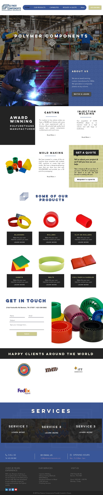
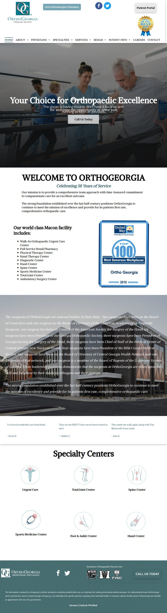
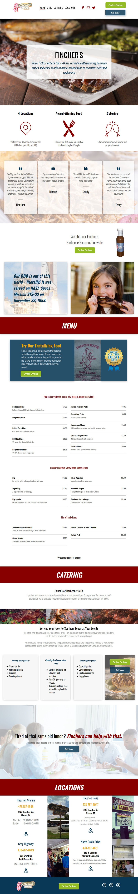
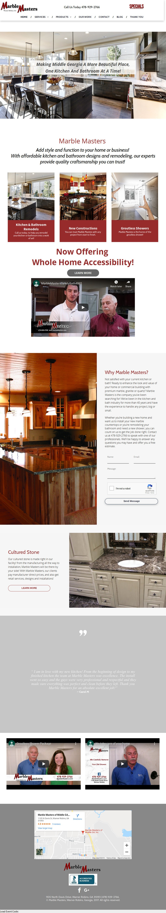
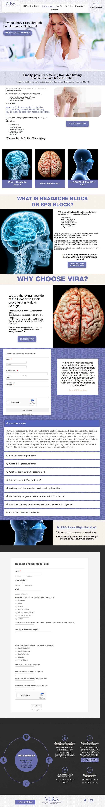
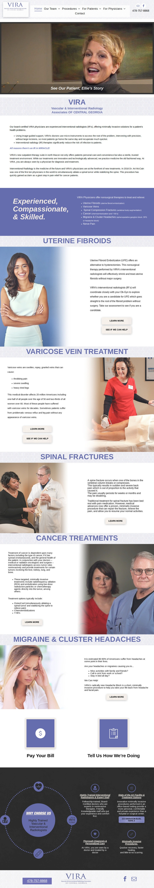
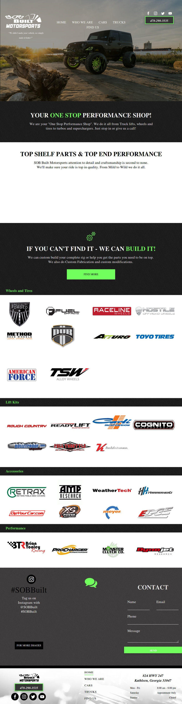
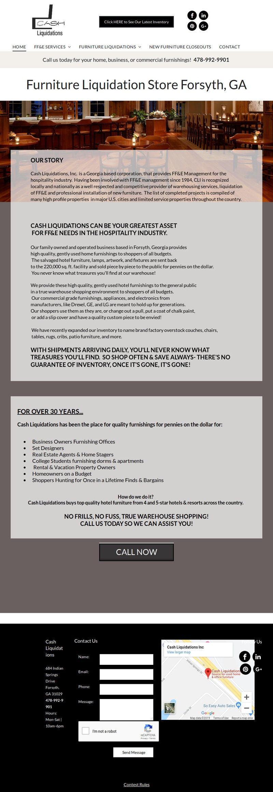
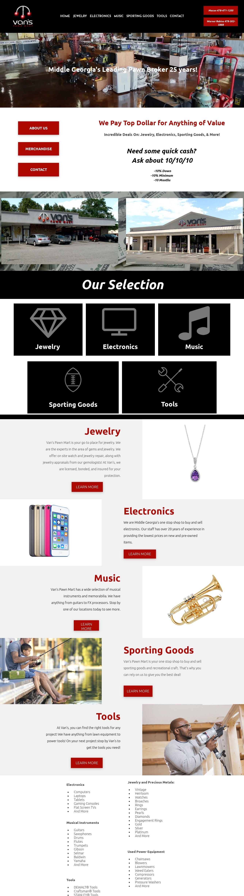
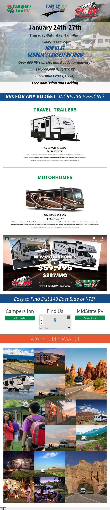

Website Collection
I love to help small and large businesses create websites that are not only functional for the client and their audience, but also enjoyable to use.
This custom manufacturing business contacted me to create a new wix site and templates for detailed products and services pages. They also needed help generating a color scheme for the site.
This orthopedic specialists office is a large business in Macon. Their site was extremely dated with a ton of medical content that needed to be migrated and updated. The doctors biographies and headshots all had to be updated as well. Their building is state of the art, so I knew that video elements would look great on a desktop version of the site. I loved editing the homepage icons for specialties and ensuring the information about various procedures and centers was organized efficiently. I wanted to ensure that a patient could easily find a doctor who could help, no matter how deep into the site they went.
Fincher’s Barbeque is a staple in Macon, but their site was lacking modern design and functionality. I created this separate domain for them for both their digital advertising and food delivery needs. They wanted the separate site to be sleek and for it to be easy to find the menu and locations. The client had no recent assets to provide, so I had to find a balance between stock photos and repurposed pictures and content.
Marble Masters has been “middle Georgia's preferred choice for marble, granite, and quartz surfaces for over 20 years”. Their site, housed on the Duda platform, was in serious need of an update. Customers were having a hard time navigating to their residential and commercial services. They also wanted to update the design and content in their gallery.
This small market is located in Warner Robins, GA and was in need of a small, simple, and functional site. They started an ad campaign and wanted to direct traffic towards a new site that featured their menu and their weekly specials. I built this site on a web building platform called Duda. I wrote all the copy, added all content, took the photography of the products and location, and designed the site.

Headache Block was a specific landing page for a service that this client wanted to direct digital ads to. This page includes an FAQ form and a headache assessment quiz, both created by me.
After I designed a landing page for VIRA, they decided they wanted an entire website redesign. This task was tedious in that all the copy for medical procedures and their multitude of services had to be updated. The client was very particular about the design vision they had. My goal was to make it as functional for a woman or patient seeking information as possible. By simply updating the contact form, the employees in the office were able to sort incoming requests much easier. I am particularly proud of the procedures page and the infographic in the footer of the site.
This automotive customization shop was a fun client for me because the owner was open to unusual design and offered creative elements that were vital to the overall functionality and appeal of the site. The logos of available products were important to him, as well as the organization of the services and photos of past projects.
Located in Forsyth, Cash Liquidations is a furniture liquidation store.Their Duda site needed an update - the functionality wasn’t where they wanted it to be. Besides assisting in the filming of multiple of their commercials, I updated the site (layout and copy) and photoshopped inventory photos to be stand alone on white backgrounds.
The site of a Macon pawn shop, Van’s, was dated and clunky when I first saw it. More importantly, it was difficult for the client to update with information or changes. With a few color, layout, and font changes the site I created on Duda was much more functional. The home page hero video came from footage I took from productions commercial archive after the client showed interest in adding video content.
This landing page was for a huge event for Campers Inn RV in association with Mid State RV called the Family RV show and its advertising campaign. When advertising RVs, there is a lot of fine print. I wanted the landing page to flow simply from an eye catching image, to organized/easy-to-read details about special offers, and back to business specific information (with a little razzle dazzle at the end). I built it to be a quick, simple, and functional landing page for the corresponding Facebook and television campaign.
